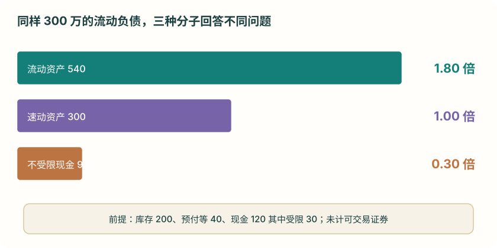
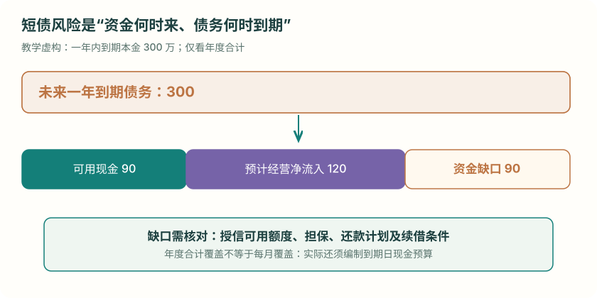

偿债能力分析：从账面比率走到到期日现金
流动比率 1.8 并不保证下个月能支付工资和利息。只有把受限资金、可变现资产、债务到期时间与经营现金流排在同一时间线上，才能理解偿债风险。
账上资产很多，为何仍有资金缺口？
某虚构制造企业流动资产 540 万，流动负债 300 万，流动比率达到 1.8。但流动资产中存货 200 万、预付等 40 万、应收 180 万，以及现金 120 万（其中 30 万受限）。若下个月大量债务到期，真正随时可用的现金可能只有 90 万。
这揭示了核心差别：流动性（Liquidity）是短期现金及可变现资源应对付款的能力，偿付能力（Solvency）侧重债务结构、长期经营收益和融资可持续性。两者关联但不等同。

短期比率：清楚写出分子的包含项目
流动比率通常为流动资产除以流动负债；速动比率的分子经常排除存货及预付款等流动性较弱项目，但不同分析机构的精确定义可能不同；现金比率常包括现金及现金等价物（有时加短期可交易证券），需要扣除不能用于当前偿债的受限款项。必须在计算稿中写明口径。
本例速动资产=540−200−40=300，速动比率 1.0；不受限现金=120−30=90，现金覆盖示意比率=0.30。正常业务可能通过应收回款和续借在未来期间增加可动用资金，因此仅从 0.30 不能推断一定违约。
偿债是时间匹配，不是年末余额竞赛
如果一年内到期本金 300 万，可用现金 90 万，未来经营净现金流预测 120 万，粗略合计资金来源 210 万，仍有 90 万缺口需要其他资产变现、已承诺授信、股东支持或再融资覆盖。但年度汇总可能掩盖前三个月集中到期的问题，实务必须按月甚至按周编制现金预算。

长期杠杆、利息覆盖与隐藏约束
资产负债率能显示资金来源结构，但银行、制造业和公用事业资本结构差异极大。需要进一步拆分带息负债、合同负债、财务担保和对外担保；看融资费用、借款契约、抵押和流动资金需求。利息保障倍数常用 EBIT/利息费用，但要说明 EBIT 口径及已资本化利息是否包含在调整分母中。
例如 EBIT 90、利息费用 30，覆盖倍数为 3；它并不代表有 3 倍现金可用于偿还本金。若 EBIT 为负、利息为零或主要来自非现金收益，应分别标记该指标不适用或失去解释力。
租赁不是一律藏在表外。《企业会计准则第21号——租赁》（2018 修订）对承租人的大多数租赁要求确认使用权资产及租赁负债，短期租赁和低价值资产租赁的简化处理另论。读者不能照搬旧准则“经营租赁都在表外”的说法。
偿债仪表盘：两个比率与利息缓冲
修改数据，即时复算
数据为教学虚构。请保持各项数据的币种、口径与时间范围一致。
尝试把受限现金提高到 100，或把 EBIT 降到 30，比较“资产账面流动性”与“利润偿付能力”分别发生了什么变化。公式不自动替代未来借款条件审查。
建立偿债事件表，而不是只记倍数
分析报告至少列出当年与未来两年的借款到期、每期偿债本息、受限资金、银行授信使用情况、担保责任、债务契约与持续经营评估。不同企业的再融资能力和资产可变现性必须结合行业判断。
自测：流动比率1.8，可以说“未来12个月安全”吗？
不能。流动资产可能包括低流动性的存货、预付款和大额逾期应收；债务可能提前集中到期；经营现金流和授信也可能变化。必须构造按到期日排序的现金预测。
结论：比率是警报器，真正的偿债分析是现金来源与义务时间匹配。
来源与适用边界
所有计算和案例均为教学虚构。不同企业、行业和准则下的比率与科目可能具有不同定义，真实研究应以原始报表和附注为准。